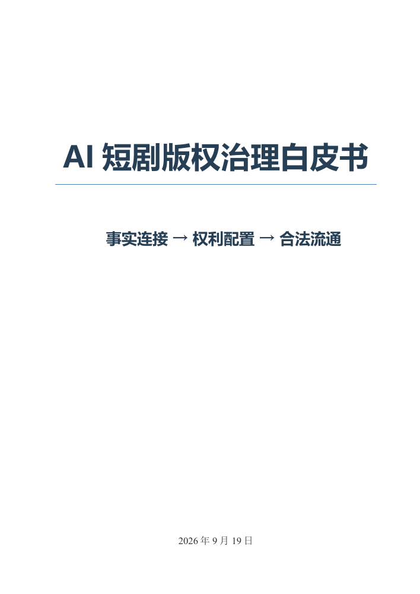

问题诊断
原著许可、肖像与声音许可、素材来源、人工贡献和发行版本等事实分散在多个主体、工具与版本中，形成事实链断裂。
事实连接 权利配置 合法流通
当 AI 加速短剧生成与改版，如何连接分散的创作事实、核验权利与许可，并支持作品的合法流通？本白皮书围绕这一问题，提出治理路径与分阶段试点方案。
如手机或微信中无法预览，可在系统浏览器中打开，或下载后阅读。

AI短剧版权治理白皮书
阅读概览
原著许可、肖像与声音许可、素材来源、人工贡献和发行版本等事实分散在多个主体、工具与版本中，形成事实链断裂。
连接创作与授权事实，将既有权利、许可条件与具体版本、市场和用途对应，检验相关条件能否同时成立。
减少重复提交、补料与核验，降低合法授权、组合和跨境流通成本；以试点检验实际效果，支持持续参与。
全文目录
点击章节打开 PDF 对应页码
页码跳转取决于浏览器的 PDF 阅读器；如未自动定位，请在阅读器中输入对应页码。
张冰雪 上海理工大学
朱飞达 新加坡管理大学
徐义剑 上海耘擎文化有限公司
程宏 上海立信会计金融学院
完整编委名单见白皮书第 2 页。